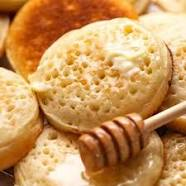

Crumpets

Description
Crumpets, a quintessential British delight, are soft, airy griddle cakes with signature holes on top. Toasted to golden perfection, they boast a delightful contrast of crispy edges and a fluffy interior. Enjoyed with butter or jams, crumpets offer a comforting and satisfying teatime treat.
Ingredients
- 2 cups all-purpose flour
- 1 teaspoon active dry yeast
- 1 teaspoon sugar
- 1/2 teaspoon salt
- 1 cup warm milk
- 1/2 cup warm water
- 1/4 teaspoon baking soda
- Butter or oil for greasing
- Additional butter for serving
Steps
- Mix flour, sugar, and salt in a bowl.
- Activate yeast in warm water and add to flour mixture.
- Let batter rise for 1 hour.
- Dissolve baking soda in water, fold into batter.
- Cook batter in greased rings on a griddle.
- Flip and cook until golden and hole-filled.
- Toast and serve warm with toppings. Enjoy!
Go to home page